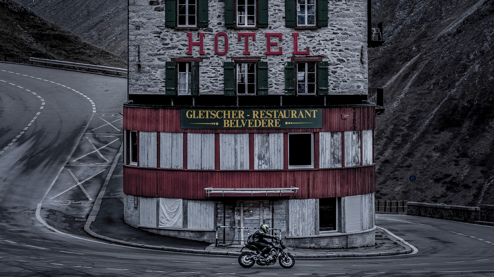

Publiserad:
Accidentally Wes Anderson och Hotel Belvédère
"Hotel Belvédère, beläget vid Furkapasset i Schweiz, är en verklig ikon för stil och nostalgi, perfekt för den som älskar den unika estetiken från Accidentally Wes Anderson. Med sin symmetri, dämpade färgpalett och tidlösa arkitektur ser hotellet ut att vara taget direkt från en av Wes Andersons filmvärldar.
Den avlägsna platsen och den dramatiska bakgrunden av Alpernas branta berg och vindlande vägar gör det till en magnet för fotografer och resenärer som söker det extraordinära i det vardagliga.
Hotel Belvédère har dessutom en rik historia och har stått som en symbol för tidiga alpresor, där resenärer på 1900-talet kunde njuta av den spektakulära utsikten över Rhônegletscher. Även om hotellet inte längre är öppet för gäster, fortsätter det att fascinera och inspirera dem som letar efter platser med en känsla av filmisk magi och nostalgisk charm."